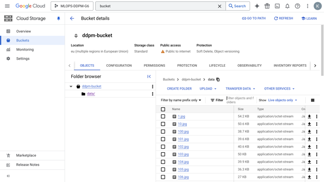

Operations
This is the report template for the exam. Please only remove the text formatted as with three dashes in front and behind like:
--- question 1 fill here ---
Where you instead should add your answers. Any other changes may have unwanted consequences when your report is
auto-generated at the end of the course. For questions where you are asked to include images, start by adding the image
to the figures subfolder (please only use .png, .jpg or .jpeg) and then add the following code in your answer:
markdown

In addition to this markdown file, we also provide the report.py script that provides two utility functions:
Running:
bash
python report.py html
Will generate a .html page of your report. After the deadline for answering this template, we will auto-scrape
everything in this reports folder and then use this utility to generate a .html page that will be your serve
as your final hand-in.
Running
bash
python report.py check
Will check your answers in this template against the constraints listed for each question e.g. is your answer too short, too long, or have you included an image when asked. For both functions to work you mustn't rename anything. The script has two dependencies that can be installed with
bash
pip install typer markdown
The checklist is exhaustive which means that it includes everything that you could do on the project included in the curriculum in this course. Therefore, we do not expect at all that you have checked all boxes at the end of the project. The parenthesis at the end indicates what module the bullet point is related to. Please be honest in your answers, we will check the repositories and the code to verify your answers.
data.py file such that it downloads whatever data you need and preprocesses it (if necessary) (M6)model.py and a training procedure to train.py and get that running (M6)requirements.txt and requirements_dev.txt file with whatever dependencies that you
are using (M2+M6)pep8) while doing the project (M7)Enter the group number you signed up on
Answer:
6
Enter the study number for each member in the group
Example:
sXXXXXX, sXXXXXX, sXXXXXX
Answer:
s216143, s194572, s214786
A requirement to the project is that you include a third-party package not covered in the course. What framework did you choose to work with and did it help you complete the project?
Recommended answer length: 100-200 words.
Example: We used the third-party framework ... in our project. We used functionality ... and functionality ... from the package to do ... and ... in our project.
Answer:
We used the third-party framework Huggingface in our project. We utilized the diffusion library from Huggingface to implement the DDPM model. The diffusion library provided pre-built model architectures and utilities that significantly accelerated our development process. Specifically, we used the DDPMPipeline, 2DUnet, and DDPMScheduler classes to load and fine-tune a pre-trained model for our specific task. This allowed us to leverage near SOTA model architectures without having to build them from scratch. Additionally, the library's extensive documentation and community support helped us troubleshoot issues and optimize our model effectively. Overall, Huggingface's tools were instrumental in achieving our project goals efficiently.
In the following section we are interested in learning more about you local development environment. This includes how you managed dependencies, the structure of your code and how you managed code quality.
Explain how you managed dependencies in your project? Explain the process a new team member would have to go through to get an exact copy of your environment.
Recommended answer length: 100-200 words
Example: We used ... for managing our dependencies. The list of dependencies was auto-generated using ... . To get a complete copy of our development environment, one would have to run the following commands
Answer: We managed our dependencies using
pipreqsto generate therequirements.txtfile. For developer-specific packages, we included them directly in the Dockerfiles. Each team member used Conda to create virtual environments tailored to this project, ensuring consistency across different development setups. To replicate our environment, a new team member would need to clone the repository, create a Conda environment using Python 3.11, and install the dependencies listed inrequirements.txt. This approach streamlined our development process, making it easier to manage dependencies and maintain a consistent environment across all team members' systems, ensuring smooth collaboration. Overall this proccess very smooth, fast and streamlined.
We expect that you initialized your project using the cookiecutter template. Explain the overall structure of your code. What did you fill out? Did you deviate from the template in some way?
Recommended answer length: 100-200 words
Example: From the cookiecutter template we have filled out the ... , ... and ... folder. We have removed the ... folder because we did not use any ... in our project. We have added an ... folder that contains ... for running our experiments.
Answer:
We used the cookiecutter as a template and filled out the data, models, and training folders. We removed the notebooks folder as we did not use Jupyter notebooks. We added an experiments folder for configuration files. The data folder includes scripts for data ingestion and preprocessing, the models folder contains model definitions, and the training folder has training scripts. Additionally, we created a scripts folder for utility scripts. This structure helped maintain a clean and organized codebase, making it easier to navigate and collaborate. By adhering to this structure, we ensured that each component of our project was modular and easily maintainable, which facilitated efficient teamwork and project management.
Did you implement any rules for code quality and format? What about typing and documentation? Additionally, explain with your own words why these concepts matters in larger projects.
Recommended answer length: 100-200 words.
Example: We used ... for linting and ... for formatting. We also used ... for typing and ... for documentation. These concepts are important in larger projects because ... . For example, typing ...
Answer:
For styling, we have used Ruff to set up the linting and formatting. We use typing to identify input parameters for each function, such that when recalled, it is easier for the reader to know what each input parameter takes as values. Additionally, for each function, we write a docstring to explain what the function does, what the input parameters are, and what the output is. This is important in larger projects because if ever in doubt about what a function does, one can simply read the docstring and get a quick overview of the function, as well as its parameters and intended output. Furthermore, maintaining consistent code quality and documentation helps in onboarding new team members and ensures that the codebase remains understandable and maintainable over time.
In the following section we are interested in how version control was used in your project during development to corporate and increase the quality of your code.
How many tests did you implement and what are they testing in your code?
Recommended answer length: 50-100 words.
Example: In total we have implemented X tests. Primarily we are testing ... and ... as these the most critical parts of our application but also ... .
Answer:
In total, we have implemented 4 tests. Primarily, we are testing if the data is properly ingested and preprocessed, ensuring that the data pipeline is functioning correctly. Additionally, we test if the training loop is working as intended, verifying that the model is being trained without errors. We also check if the model is set up correctly, confirming that the architecture and parameters are as expected. Lastly, we test if the API is working, ensuring that it can handle requests and return the correct responses.
What is the total code coverage (in percentage) of your code? If your code had a code coverage of 100% (or close to), would you still trust it to be error free? Explain you reasoning.
Recommended answer length: 100-200 words.
Example: The total code coverage of code is X%, which includes all our source code. We are far from 100% coverage of our ** code and even if we were then...*
Answer:
We have decided to include code coverage, with a total of 56% coverage. This includes most of our source code. We are far from 100% coverage of our code, and even if we were, we would not trust it to be error-free. This is because code coverage only measures the percentage of code that is executed during testing, not the quality of the tests themselves. Therefore, even with 100% coverage, there could still be bugs in the code that are not caught by the tests. Additionally, code coverage does not guarantee that the code is correct, only that it has been tested. Therefore, it is important to have a combination of code coverage and other testing methods to ensure the code is error-free.
Did you workflow include using branches and pull requests? If yes, explain how. If not, explain how branches and pull request can help improve version control.
Recommended answer length: 100-200 words.
Example: We made use of both branches and PRs in our project. In our group, each member had an branch that they worked on in addition to the main branch. To merge code we ...
Answer:
For our project, we did not use branches and PRs, as we considered the project small enough to manage without them, and we are only three members. This allowed us to work on the same branch efficiently. However, in larger projects, branches and PRs are crucial for maintaining an overview and preventing merge conflicts. By having one person manage the main branch, other members can work on their own branches and submit PRs when ready. This ensures the main branch remains clean and up-to-date. Additionally, PRs allow for code reviews, which can improve code quality and catch potential issues early.
Did you use DVC for managing data in your project? If yes, then how did it improve your project to have version control of your data. If no, explain a case where it would be beneficial to have version control of your data.
Recommended answer length: 100-200 words.
Example: We did make use of DVC in the following way: ... . In the end it helped us in ... for controlling ... part of our pipeline
Answer:
We did make use of DVC in the following way: The data was downloaded and organized in the data folder, which was also added to the gitignore file such that the data only was in the cloud storage. The data was pushed and stored in GCP storage in a bucket from where it could be pulled. This made sure that all team members had the same data and organization. Additionally, DVC allowed us to version control our data, ensuring that any changes to the data were tracked and could be reverted if necessary. This improved collaboration and reproducibility in our project.
Discuss you continuous integration setup. What kind of continuous integration are you running (unittesting, linting, etc.)? Do you test multiple operating systems, Python version etc. Do you make use of caching? Feel free to insert a link to one of your GitHub actions workflow.
Recommended answer length: 200-300 words.
Example: We have organized our continuous integration into 3 separate files: one for doing ..., one for running ... testing and one for running ... . In particular for our ..., we used ... .An example of a triggered workflow can be seen here:
Answer:
We use unit testing to test the data and training pipeline, employing pytest to generate reports. Additionally, we use Ruff for linting our code to PEP 8 standards, specifically using codes: ["I", "N", "F", "E"]. We also measure code coverage of our tests. All these processes are integrated with GitHub Actions, ensuring they run on every push and pull request to our master branch. Although we do not have strict rules associated with these checks, as we felt it would be too restrictive for a small group, we frequently ensure that all our GitHub Actions run without failure. This setup helps maintain code quality and consistency throughout the development process.
Our continuous integration setup is organized into several workflows. The first workflow focuses on unit testing, where pytest is used to run tests and generate coverage reports. This ensures that our code is functioning correctly and helps identify any issues early in the development process. The second workflow is dedicated to linting, where Ruff checks our code against PEP 8 standards. This helps maintain a consistent coding style and improves code readability.
By integrating these workflows with GitHub Actions, we automate the process of running tests and linting checks, reducing the manual effort required to maintain code quality. This setup also provides immediate feedback on code changes, allowing us to address any issues promptly. Overall, our continuous integration setup has been instrumental in ensuring the reliability and maintainability of our codebase, even without strict enforcement of rules.
In the following section we are interested in learning more about the experimental setup for running your code and especially the reproducibility of your experiments.
How did you configure experiments? Did you make use of config files? Explain with coding examples of how you would run a experiment.
Recommended answer length: 50-100 words.
Example: We used a simple argparser, that worked in the following way: Python my_script.py --lr 1e-3 --batch_size 25
Answer:
For logging hyperparameters, we used Hydra to load the configurations and manage our hyperparameters locally. We then have a sweep.yaml file for wandb to run hyperparameter sweeps. If one wanted to train with a wandb sweep they would have to configer the train_config.yaml and set use_wandb=true. Then they would run the following command: python train.py.
Reproducibility of experiments are important. Related to the last question, how did you secure that no information is lost when running experiments and that your experiments are reproducible?
Recommended answer length: 100-200 words.
Example: We made use of config files. Whenever an experiment is run the following happens: ... . To reproduce an experiment one would have to do ...
Answer:
We made use of config files. If we chose to run a train loop locally, the initial parameters were stored in the train_config.yaml file. If we chose to run it with wandb, the sweep.yaml file was used to initialize the run. Then, for each run, the given parameters were stored in the wandb dashboard. This ensured that no information was lost when running experiments and that the experiments were reproducible. To reproduce an experiment, one would have to run the same command with the same parameters, which would then be logged in wandb. Additionally, we ensured that all configuration files were version controlled, making it easy to track changes and revert to previous configurations if needed. This approach provided a robust framework for managing and reproducing experiments consistently.
Upload 1 to 3 screenshots that show the experiments that you have done in W&B (or another experiment tracking service of your choice). This may include loss graphs, logged images, hyperparameter sweeps etc. You can take inspiration from this figure. Explain what metrics you are tracking and why they are important.
Recommended answer length: 200-300 words + 1 to 3 screenshots.
Example: As seen in the first image when have tracked ... and ... which both inform us about ... in our experiments. As seen in the second image we are also tracking ... and ...
Answer:
As seen in the first image we have made a sweep over the learning rate and batch size. We have done this in order to find the optimal combination for minimizing the loss. as it can be seen in the image, a higher learning rate will result in a higher loss, no matter the batch size. Overall, we did 10 runs for the sweep, and the best run had a learning rate of 2e-4 and batch size 32.
The second image shows the log we have made for the training loss. The importance of tracking the loss is to see if the model is actually learning over time. As explained before, a high learning rate will result in a high loss. However, from the loss plot with respect to the epochs, we see that the runs with a high learning rate not only have a high loss but do not converge at all.
If we look at the runs with a lower learning rate, we see that the loss converges quickly to a low value but then stays there. This could indicate that the model is overfitting the data, which makes sense since we only have 819 data points.
Docker is an important tool for creating containerized applications. Explain how you used docker in your experiments/project? Include how you would run your docker images and include a link to one of your docker files.
Recommended answer length: 100-200 words.
Example: For our project we developed several images: one for training, inference and deployment. For example to run the training docker image:
docker run trainer:latest lr=1e-3 batch_size=64. Link to docker file:Answer:
For our project we developed several images: one for training, one for the the api and one for the frontend. For training the images was was pushed to a container in the artifact registry, from where a config file was created to train using the Vertex ai on the latest train image. The api dockerfile was also placed in a container in the artifact registry from where the cloud run was deployed using this image.
Since the current train:latest dockerfile is set up to run wandb it should be run using the vertex ai training file as this ensures that the wandb api key is passed to the image env.
Training docker image gcloud build submit . --config=vertex_ai_train.yaml
Link to docker file: https://github.com/jacobtuxen/MLOPS_DDPM_G6/blob/master/dockerfiles/api.dockerfile
Api docker image docker run api:latest
When running into bugs while trying to run your experiments, how did you perform debugging? Additionally, did you try to profile your code or do you think it is already perfect?
Recommended answer length: 100-200 words.
Example: Debugging method was dependent on group member. Some just used ... and others used ... . We did a single profiling run of our main code at some point that showed ...
Answer:
We profiled our code using pytorch lightning and one thing that could be worked on in the future is our dataloader. Our dataloader is working properly and efficiently loads the data for training. However, there is room for improvement in terms of computation and performance. Currently, the dataloader processes data sequentially, which can be a bottleneck when dealing with large datasets. In the future, we could implement a more optimized dataloader that leverages parallel processing or distributed data loading techniques. This would significantly reduce the data loading time and improve the overall training speed. Additionally, we could explore using advanced libraries such as Dask or Apache Spark for handling large-scale data processing tasks more efficiently.
In the following section we would like to know more about your experience when developing in the cloud.
List all the GCP services that you made use of in your project and shortly explain what each service does?
Recommended answer length: 50-200 words.
Example: We used the following two services: Engine and Bucket. Engine is used for... and Bucket is used for...
Answer:
We utilized several GCP services in our project. For data storage, we employed Google Cloud Storage (Bucket). Secret Manger was used to store wandb api key. Cloud Build was used to build Docker images and manage secrets for Vertex AI runs. Artifact Registry was used to store our Docker images. Additionally, Vertex AI was leveraged for training models and running hyperparameter sweeps. Lastly, we used Cloud run as backend for deployment of the api. We utilized several GCP services in our project. For data storage, we employed Google Cloud Storage (Bucket). Secret Manger was used to store wandb api key. Cloud Build was used to build Docker images and manage secrets for Vertex AI runs. Artifact Registry was used to store our Docker images. Additionally, Vertex AI was leveraged for training models and running hyperparameter sweeps. Lastly, we used Cloud run as backend for deployment of the api.
The backbone of GCP is the Compute engine. Explained how you made use of this service and what type of VMs you used?
Recommended answer length: 100-200 words.
Example: We used the compute engine to run our ... . We used instances with the following hardware: ... and we started the using a custom container: ...
Answer:
We did not specifically use the compute engine to create any instances of a VM, but it was used through Vertex ai as this service automatically launches a VM and closes it after the experiments. For this a VM with a n1-highmem 4 cpu was used. Although using a GPU could have significantly optimized the training process, we were unable to obtain access to one during the course period due to an unanswered quota request. Consequently, the training time was extended, taking several hours to complete the WandB sweep. Therefore, we decided to also use DTUs HPC center to train the model more efficiently.
Insert 1-2 images of your GCP bucket, such that we can see what data you have stored in it. You can take inspiration from this figure.
Answer:

Upload 1-2 images of your GCP artifact registry, such that we can see the different docker images that you have stored. You can take inspiration from this figure.
Answer:
Upload 1-2 images of your GCP cloud build history, so we can see the history of the images that have been build in your project. You can take inspiration from this figure.
Answer:
Did you manage to train your model in the cloud using either the Engine or Vertex AI? If yes, explain how you did it. If not, describe why.
Recommended answer length: 100-200 words.
Example: We managed to train our model in the cloud using the Engine. We did this by ... . The reason we choose the Engine was because ...
Answer:
We managed to train our model in the cloud using Vertex ai. We did this by creating a vertex ai training file, which runs the cpu_config.yaml file while making sure that the wandb api key is passed correctly to the image environment from the secrets manager. This also allowed for easy adjustments to the cpu config file, if a different VM or image is needed. We started out using n1-highmem-2 but this was to little memory for training the model. Therefore we switched to n1-highmem-4 which had enough memory to train the model. Ideally, we wanted to train on a gpu, but we were unable to get any quota requests accepted.
Did you manage to write an API for your model? If yes, explain how you did it and if you did anything special. If not, explain how you would do it.
Recommended answer length: 100-200 words.
Example: We did manage to write an API for our model. We used FastAPI to do this. We did this by ... . We also added ... to the API to make it more ...
Answer:
Yes, we used FastAPI to create an inference API for our model. We combined this with a Dockerfile to push the container to the Artifact Registry, allowing us to deploy it on Cloud Run. This setup worked well for deploying the API. However, due to the lack of GPU quota on Cloud Run (we have requested it but are still waiting), the inference time was significantly slower. Running a UNet model on a CPU for 100 iterations resulted in slow performance. Despite this, the deployment process was smooth, and the API functioned correctly, demonstrating the feasibility of our approach once GPU resources become available.
Did you manage to deploy your API, either in locally or cloud? If not, describe why. If yes, describe how and preferably how you invoke your deployed service?
Recommended answer length: 100-200 words.
Example: For deployment we wrapped our model into application using ... . We first tried locally serving the model, which worked. Afterwards we deployed it in the cloud, using ... . To invoke the service an user would call
curl -X POST -F "file=@file.json"<weburl>Answer:
Yes, we deployed our service in Cloud Run. The API returned a PIL image, which we converted to bytes. This approach worked very well for our needs. By using Cloud Run, we ensured that our API was scalable and could handle multiple requests efficiently. The deployment process involved containerizing our FastAPI application and pushing the Docker image to the Artifact Registry. From there, we deployed the container to Cloud Run, which managed the infrastructure and scaling automatically. This setup allowed us to focus on developing the API without worrying about the underlying infrastructure. Additionally, Cloud Run provided built-in monitoring and logging, which helped us keep track of the API's performance and troubleshoot any issues that arose during deployment.
Did you perform any unit testing and load testing of your API? If yes, explain how you did it and what results for the load testing did you get. If not, explain how you would do it.
Recommended answer length: 100-200 words.
Example: For unit testing we used ... and for load testing we used ... . The results of the load testing showed that ... before the service crashed.
Answer:
We chose to unit test our API by testing its root and its response status code as well. We did not perform testing on the sample API since it would have made our GitHub workflow too slow. However, we did test the API locally and it worked as intended. For load testing, we would have used Locust to simulate multiple users accessing the API at the same time. This would have allowed us to measure the performance of the API under different loads and identify any bottlenecks or issues. Additionally, load testing would help us understand the scalability of our API and ensure it can handle high traffic without degrading performance. By identifying potential performance issues early, we could optimize our API to provide a better user experience.
Did you manage to implement monitoring of your deployed model? If yes, explain how it works. If not, explain how monitoring would help the longevity of your application.
Recommended answer length: 100-200 words.
Example: We did not manage to implement monitoring. We would like to have monitoring implemented such that over time we could measure ... and ... that would inform us about this ... behaviour of our application.
Answer:
We did not manage to implement monitoring. However, we would like to have monitoring implemented to measure the performance and health of our application over time. Monitoring would help us track key metrics such as response times, error rates, and resource utilization, enabling us to identify potential issues and optimize the system for better performance. However, as we work with a DDPM with no guidance, we are primarily using unsupervised learning, which makes monitoring certain metrics, such as error rates, more challenging. These challenges require some additional thinking and effort, which we unfortunately did not allocate time for in this project.
In the following section we would like you to think about the general structure of your project.
How many credits did you end up using during the project and what service was most expensive? In general what do you think about working in the cloud?
Recommended answer length: 100-200 words.
Example: Group member 1 used ..., Group member 2 used ..., in total ... credits was spend during development. The service costing the most was ... due to ... . Working in the cloud was ...
Answer:
s194572 used: 0.81 USD, this was mostly used for Bucket and Vertex AI s214786 used: 1.16 USD, this was mostly Cloud Run, and Vertex AI s216143 used: 0.20 USD, this was mostly used on the exercises (most traning by this student was done locally)
The total cost of working in the cloud for this project was $2.17 USD. However, once we gain GPU access on Cloud Run, we anticipate significant improvements in performance and efficiency, which will greatly enhance our project's capabilities. Working in the cloud was a positive experience overall, because we have learnt a lot about how to deploy models and APIs.
Did you implement anything extra in your project that is not covered by other questions? Maybe you implemented a frontend for your API, use extra version control features, a drift detection service, a kubernetes cluster etc. If yes, explain what you did and why.
Recommended answer length: 0-200 words.
Example: We implemented a frontend for our API. We did this because we wanted to show the user ... . The frontend was implemented using ...
Answer:
We created a very simple fronted which consisted of a button and a placeholder for loading the image from the inference API.
Include a figure that describes the overall architecture of your system and what services that you make use of. You can take inspiration from this figure. Additionally, in your own words, explain the overall steps in figure.
Recommended answer length: 200-400 words
Example:
The starting point of the diagram is our local setup, where we integrated ... and ... and ... into our code. Whenever we commit code and push to GitHub, it auto triggers ... and ... . From there the diagram shows ...
Answer:
The starting point of the diagram is our PyTorch application, which we wrapped in the PyTorch Lightning framework. This setup allowed us to streamline our model training and experimentation process. We used Git for version control to manage our codebase effectively, ensuring that all changes were tracked and could be reverted if necessary.
Our local data storage was managed using DVC (Data Version Control), which allowed us to fetch and version control our datasets efficiently. This ensured that all team members had access to the same data and could reproduce experiments reliably. The PyTorch application served as the main communication hub for our third-party libraries, such as Weights & Biases (W&B) for experiment tracking and our package manager for dependency management.
To transition from a local setup to a cloud-based environment, we utilized Docker. Docker files were created to containerize our application, ensuring consistency across different environments. These Docker images were then pushed to the Google Artifact Registry, making them accessible for various cloud services.
For data storage in the cloud, we used Google Cloud Storage (Bucket). This allowed us to store large datasets and access them from anywhere, facilitating collaboration and scalability. The connection between our local setup and the cloud storage was seamless, thanks to DVC and the integration with Google Cloud services.
Discuss the overall struggles of the project. Where did you spend most time and what did you do to overcome these challenges?
Recommended answer length: 200-400 words.
Example: The biggest challenges in the project was using ... tool to do ... . The reason for this was ...
Answer:
Although most of the project was implemented smoothly and few challenges were encountered, the biggest challenge was ensuring that the project root was consistent both in the project itself and in the Dockerfiles. An incorrect project root resulted in incorrect paths, causing the training to fail due to an incorrect data path. Initially, the root was correctly specified in the project folder, but in the Docker image, the src/pokemon_ddpm/init.py file was placed in the python3.11 folder, which disrupted all the paths. This issue was resolved and ensured complete consistency in the Dockerfiles. This resulted in all paths being correct and the training images being contructed correctly making it possible to run the training and etc. in the cloud.
Furthermore, a significant challenge has been working in the cloud. This has primarily been due to issues with logging and quotas. The logging has been somewhat difficult to read, making debugging harder than necessary. Additionally, working with quotas has been challenging due to long response times on quota requests, making it difficult to obtain sufficient computational power for training the model and running inference. This led to us using the DTU HPC instead as this made it easier to complete training and inference.
State the individual contributions of each team member. This is required information from DTU, because we need to make sure all members contributed actively to the project. Additionally, state if/how you have used generative AI tools in your project.
Recommended answer length: 50-300 words.
Example: Student sXXXXXX was in charge of developing of setting up the initial cookie cutter project and developing of the docker containers for training our applications. Student sXXXXXX was in charge of training our models in the cloud and deploying them afterwards. All members contributed to code by... We have used ChatGPT to help debug our code. Additionally, we used GitHub Copilot to help write some of our code. Answer:
Student s216143 was in charge of proper data ingestion with preprocessing as input to the model. The student was also in charge of configuring wandb and setting up hyperparameter sweeps, and setting up some of the unit tests. Student s194572 was in charge of setting up the model and training the model. The student also deployed the model in the cloud, as well as setting up the API. Student s214786 was in charge of setting up docker containers, as well as setting up the cloud too. All members contributed to the code by writing tests, helping each other, and debugging the code.
We have used ChatGPT to help debug our code. Additionally, we used Github Copilot to help structure our code.
{kind=link}
{kind=link}
{kind=link}
{kind=link}
{kind=link}